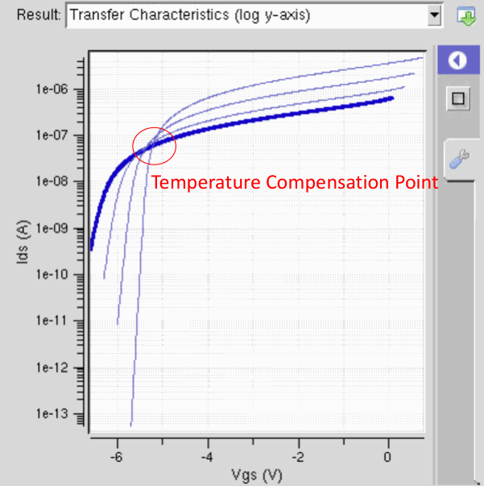

Module 17b
Transistors at High Temperature
Why a MOSFET fails when hot and a junction field-effect transistor keeps working: the MOSFET's off state, the lifetime of its gate oxide and the thermal strain in its stack of materials; then the JFET from its structure, the two temperature effects that oppose in it, and the bias at which they cancel.
M17a followed temperature through the semiconductor and the p–n junction: the intrinsic density rises steeply, mobility falls, and a junction's leakage grows long before the material becomes intrinsic. A transistor adds a means of control, the gate, and the way the gate acts on the channel decides how the device fails when hot. The MOSFET of M01 §8 controls its channel through an oxide. The course names three problems of the MOSFET at high temperature (Deck 15 p. 10): a large leakage current, fast electrical breakdown of the oxide, and cracking of the oxide under thermal strain. The last two belong to the oxide itself, and the course then asks whether a transistor can be made without it. The junction field-effect transistor, the JFET, is that transistor: it controls its channel through a reverse-biased p–n junction.
§1 explains how a hot MOSFET loses its off state, through its threshold voltage, its subthreshold slope and the leakage of its drain junction, and how silicon-on-insulator construction delays the loss. §2 treats the lifetime of the gate oxide under field, which shortens steeply with temperature, and §3 the strain that thermal expansion builds at every interface, with the choice of metal it forces. §4 builds the JFET from its structure: the depletion regions, pinch-off and the square law. §5 sets out the two temperature effects that act on the JFET in opposite directions and the bias at which they cancel. §6 compares the transistor types for high-temperature use, the comparison behind the silicon carbide integrated circuits of M17c.
1 · The hot MOSFET loses its off state
A MOSFET switches by raising and lowering a potential barrier between source and drain (M01 §8). With the gate below threshold, electrons in the source face the barrier of the p-type body, and the few with enough thermal energy to cross it carry the subthreshold current. With the gate above threshold the barrier is pulled down and an inversion layer connects source and drain. Heat changes both states, but unequally: the on-current changes by tens of percent while the off-current changes by orders of magnitude. The transistor keeps turning on and stops turning off.
Three quantities move together as the temperature rises. The subthreshold swing S, the gate voltage needed to change the subthreshold current tenfold, is proportional to the absolute temperature, (1.15): 59.5 mV per decade at 300 K becomes 99.2 at 500 K before the body factor is applied, so the same gate voltage below threshold suppresses the current less. The threshold voltage falls. And the drain junction, a reverse-biased n⁺p diode, leaks more, as every junction of M17a §5 does.
The threshold falls because the band bending needed for inversion shrinks. Equation (1.11) sets the threshold where the surface potential reaches 2φF, twice the bulk Fermi potential φF = (kT/q) ln(Na/ni). As ni rises, the bulk Fermi level moves toward midgap, φF falls, and the depletion charge the gate must support at threshold falls with it. The flat-band voltage changes too, because the Fermi level of an n⁺ polysilicon gate is tied to its conduction band and the gap narrows. Taur and Ning combine these terms for a uniformly doped n-channel device with an n⁺ polysilicon gate.
For the example device of M01, with 10¹⁷ cm⁻³ in the body and 10 nm of oxide, the body factor is 1.29 and (17b.1) gives −1.1 mV/K near 300 K. The coefficient steepens as the device heats, because the thinner depletion layer at threshold raises Cd and with it m, to 1.32 at 400 K and 1.37 at 500 K. Evaluating (1.11) at each temperature with the ni of M17a, the threshold of 0.34 V at 300 K falls to 0.23 V at 400 K and 0.10 V at 500 K, about −1.3 mV/K by then. Meanwhile the swing, 77 mV per decade at 300 K, grows to 105 at 400 K and 136 at 500 K. At zero gate voltage the device sits 4.4 decades of current below its threshold current at 300 K, 2.2 decades at 400 K and only 0.8 decade at 500 K. Holding the current at threshold fixed, which it nearly is, the off-current at zero gate voltage rises about 60-fold from 25 to 100 °C, about 170-fold by 400 K and about 4,000-fold by 500 K. Taur and Ning put the typical rise of a MOSFET's off-state leakage between 25 and 100 °C at 20 to 50 times.
The drain junction sets a floor beneath this. In the off state the drain is held positive, at up to the supply voltage, so its junction with the body is reverse-biased, and its reverse current, the sum of diffusion and generation currents of (17a.5), flows into the body through the drain terminal whatever the gate does. NASA's tutorial names it IDL and states the consequence: the reverse leakage of the drain junction dictates the off-state current floor IOFF (Deck 16a p. 49, after Neudeck, Okojie and Chen 2002). For the illustrative junction of M17a, a p⁺n junction with 10¹⁶ cm⁻³, a lifetime of 1 µs and a 1 µm depletion width, each square micrometre of junction leaks 8×10⁻¹⁶ A at 300 K, 4×10⁻¹³ A at 400 K, 5×10⁻¹¹ A at 500 K and 5×10⁻⁹ A at 600 K. No gate voltage removes this current, so once it exceeds the subthreshold current it is the off-current.
The on-current responds to two of the same changes in opposite directions. Above threshold the current is proportional to the channel mobility, which falls with temperature as lattice scattering grows (M17a §4), and it grows with the gate overdrive VGS − Vth, which rises as the threshold falls. At large overdrive the mobility dominates and the on-current falls, which is the loss of gain and on-current named on Deck 16a p. 49. At one gate voltage the two changes cancel, a zero-temperature-coefficient point that MOSFET circuits use for temperature-stable references (Filanovsky and Allam 2001); §5 derives the same balance for the JFET.
The simulator runs of Lecture 15 show the pattern. The nanoHUB MOSFET tool, an online device simulator from the same service as the p–n junction tool of M17a, was run at 300 and 400 K, with two traces in each transfer plot and three gate voltages in each output plot (Deck 15 pp. 15–16; the slides state neither the device nor the biases). At the start of the gate sweep, −0.1 V, the two drain currents rose about 30-fold and 35-fold for the 100 K step, from about 4×10⁻⁹ to 1.1×10⁻⁷ A and from about 1×10⁻⁹ to 4×10⁻⁸ A, and at zero gate voltage about 12- and 15-fold. By (17b.2) the rise is largest where the gate lies furthest below threshold, and this device's threshold is low. At a gate voltage of 1 V the currents barely moved, 6.3×10⁻⁴ to 6.7×10⁻⁴ A and 1.5×10⁻⁴ to 1.4×10⁻⁴ A, and the saturated output currents at 400 K were 5–15 % higher than at 300 K, the largest change at the lowest gate voltage, where the falling threshold outweighs the falling mobility. A leaky off state wastes power in every gate of a logic circuit, since each off transistor conducts between the supply and ground, and it degrades the logic levels, which depend on the off transistor holding its node.
The failure of the hot MOSFET
A hot MOSFET still turns on. What it loses is the off state: the threshold falls, the swing widens and the drain junction leaks, so the current at zero gate voltage climbs toward the on-current. NASA's tutorial summarizes the conventional MOSFET at temperature as losing gain and on-current and losing its ability to turn off, with IOFF ≈ IDL (Deck 16a p. 49), and adds that leakage, rather than intrinsic conduction, is often the factor that limits a device or circuit at high temperature (Deck 16a p. 50).
The leakage floor scales with the area of the drain junction, and silicon-on-insulator construction removes most of that area. An SOI MOSFET is built in a thin silicon film on a buried layer of SiO₂. The source and drain extend through the film to the buried oxide, so the drain meets the p-type body only along the edge facing the channel, while the bottom of the drain, the larger part of a bulk junction, rests on oxide (Deck 16a p. 51). Less junction area means less leakage, and SOI parts serve to about 250–300 °C (Deck 16a pp. 4, 11). The tutorial's table of applications lists bulk silicon and SOI as the current technology for applications up to 300 °C, none for those at 550–600 °C, and wide-gap semiconductors as the future technology for those and for most high-power applications (Deck 16a p. 48). How much leakage a circuit tolerates, and so its highest working temperature, depends on the circuit and the application, and the criteria of signal integrity differ between digital and analog circuits (Deck 16a p. 51): a digital gate needs its logic levels to stay separated, an analog stage needs its bias currents to stay accurate.
2 · The gate oxide: breakdown that comes sooner when hot
The gate oxide of a MOSFET carries the gate field for the whole life of the device. Under that field it degrades: electrons and holes injected into the oxide break bonds and create traps, and the traps accumulate until they link into a conducting path from gate to channel. Current then concentrates in the path, Joule heating turns it into a conducting filament within microseconds, and the oxide is permanently shorted. Because the failure arrives only after the film has been held under stress for some time, it is called time-dependent dielectric breakdown, TDDB. The mechanism and its field- and current-driven models are in EEE 6338 M06 §5; this section concerns its temperature dependence.
Deck 15 p. 17 shows a measurement made for high-temperature silicon-on-insulator electronics (Grella et al. 2013). Capacitors with 40 nm of SiO₂ under a polysilicon gate were held at a gate voltage of 37 V, a field of 9.3 MV/cm, several at each of four temperatures, while the current through the oxide was recorded. The current first falls slowly from about 10⁻⁵ A, as electrons trapped in the oxide lower the field at the injecting electrode (EEE 6338 M06 §3), and each capacitor then breaks down with a jump to about 10⁻³ A. Read from the plot, the median times to breakdown are about 1.9×10⁴ s (5.3 hours) at 150 °C, 4.8×10³ s at 200 °C, 1.0×10³ s at 250 °C and 3.4×10² s (6 minutes) at 300 °C, each set spread over a factor of two to three. The 37 V across this oxide is far above any voltage it would carry in operation: this is an accelerated test, which compresses years into hours so that the dependence on temperature can be measured.
A process whose rate is set by thermal activation over an energy barrier proceeds at a rate proportional to exp(−EA/kT), where the activation energy EA is the height of the barrier. The time to complete it, here the time to breakdown, varies inversely, which is the Arrhenius law of Deck 15 pp. 17–18.
Deck 15 p. 18 works the law with t0 = 1 s and EA = 0.4 eV. At 300 K, EA/kT = 0.4/0.026 = 15.38 and tBD = e15.38 s = 4.8×10⁶ s, about 56 days. At 600 K, kT doubles to 0.052 eV, EA/kT halves to 7.7, and tBD = 2.2×10³ s, about 37 minutes. Heating from 300 to 600 K shortens the time to breakdown about 2,200-fold, exp(7.7). The ratio form of (17b.3) contains no t0: the factor is fixed by EA and the two temperatures, so the arbitrary 1 s does not affect it, while a doubling from 400 to 800 K costs only about 330-fold. The capacitors of p. 17 give the activation energy of their own test: their medians lie close to one straight line on an Arrhenius plot, whose slope corresponds to EA ≈ 0.57 eV at 9.3 MV/cm, between about 0.47 and 0.67 eV for neighbouring pairs of temperatures. The 55-fold shortening between 150 and 300 °C follows from it.
The times in the Deck 15 p. 18 example
The worked example's arithmetic is exact, but its two times are not lifetimes. The time constant t0 = 1 s is chosen for the calculation, and the Arrhenius form carries no field, while a real time to breakdown depends on field as strongly as on temperature; 4.8×10⁶ s at 300 K is therefore not a predicted life for any oxide. The 0.4 eV is likewise a round value: the measurement on the previous slide implies about 0.57 eV at its field. What the example does show is independent of t0 and fixed by EA and the two temperatures: the factor by which the rise from 300 to 600 K shortens the time to breakdown.
A MOSFET meant to run hot must therefore hold its oxide at a lower field, or make the oxide thicker, to keep its life. A thicker oxide lowers Cox, which raises the body factor of (1.15) and widens the subthreshold swing that §1 identified as one source of the hot leakage. Qualification of a part against these mechanisms by accelerated testing is the subject of M19.
3 · Thermal expansion and the choice of metal
A device is a stack of materials bonded to each other at the temperatures at which they were grown or deposited: silicon, its oxide, polysilicon, metals, passivation. Each expands with temperature at its own rate, and a bonded interface does not allow the layers to expand independently, so heating strains every interface. The strain can crack a brittle dielectric, and the metal must in addition survive the temperature itself, without melting, reacting or oxidizing.
The linear expansion coefficient is the fractional change of length per kelvin, α = (1/L)dL/dT, in K⁻¹ and usually quoted in units of 10⁻⁶ K⁻¹ (ppm/K). A free bar heated by ΔT acquires a strain, a fractional change of length, ΔL/L = ∫α dT, which is αΔT when α changes little over the interval. A thin film bonded to a thick substrate cannot do this. The substrate imposes its own expansion on the film, and the film carries the difference between the two as a mismatch strain: compressive on heating if the film expands faster than the substrate, tensile on cooling.
Silicon expands by 2.6×10⁻⁶ K⁻¹ at 300 K, rising to 3.6×10⁻⁶ K⁻¹ at 500 K and 4.3×10⁻⁶ K⁻¹ at 1,000 K (Okada and Tokumaru 1984); fused silica, which a thermal oxide resembles, by about 0.5×10⁻⁶ K⁻¹. Deck 15 p. 19 plots the difference measured on polysilicon and oxide films (Tada et al. 2000): about 2.9×10⁻⁶ K⁻¹ near room temperature, rising to 5.8×10⁻⁶ K⁻¹ near 850 °C, larger than bulk crystalline silicon would give. Integrated from 27 to 327 °C, that difference amounts to a mismatch strain of about 0.11 %, the 0.1–0.2 % the lecture estimates for a 300 K rise. The same slide shows a failed cell of a silicon carbide power MOSFET, located by optical beam-induced resistance change (OBIRCH, a laser scan that maps where local heating changes the current) and then sectioned with a focused ion beam. The lecture points to a crack in the dielectric between the polysilicon gate and the aluminium source metal, through which current flowed, and attributes it to thermal expansion.
Metals expand much faster than silicon. Near room temperature the coefficients are, in units of 10⁻⁶ K⁻¹, aluminium 23.1, copper 16.5, gold 14.2, nickel 13.4, platinum 8.8, titanium 8.6, molybdenum 4.8 and tungsten 4.5, against silicon's 2.6 (handbook values; Deck 15 p. 21 plots gold, aluminium, molybdenum, tungsten and silicon). Aluminium and copper, the interconnect metals of ordinary chips, and gold, the metal of bond wires and pads, expand five to nine times faster than the silicon beneath them. Their melting points rank them a second time (Deck 15 p. 20): aluminium 660 °C, gold 1,064, copper 1,085, nickel 1,455, titanium 1,668, platinum 1,768, molybdenum 2,623 and tungsten 3,422 °C. Aluminium on silicon fails sooner than its melting point suggests, because the two form a eutectic that melts at 577 °C (Murray and McAlister 1984); the slide's photograph shows a die on which the aluminium melted at a failure point near the gate contact, which the lecture attributes to the temperature together with a large current. Aluminium and copper oxidize. Gold does not, but it melts far below the refractory metals and expands more than five times as fast as silicon.
Molybdenum and tungsten are therefore the metals of choice for hot electronics, and since both oxidize in air when hot, they are covered with gold (Lecture 15). The slide's expansion curves for the two (Deck 15 p. 21) end at 300 K, while the match matters when hot. In the White and Minges evaluation, whose 300 K value of 4.4×10⁻⁶ K⁻¹ differs from the handbook's 4.5 only between sources, tungsten's coefficient rises only to 4.7 at 500 K and 5.0 at 1,000 K (White and Minges 1997), while silicon's rises from 2.6 to 4.3, so the ratio of the two falls from 1.7 to 1.2 and the match improves as the device heats. NASA's silicon carbide circuits use refractory and noble materials to the same end: tantalum silicide (TaSi₂) interconnect and contacts, and bond pads of platinum, iridium and platinum over TaSi₂ under gold (Deck 16a pp. 62–63; M17c).
Deck 15 p. 22 estimates the strain in a gold gate on SiO₂ heated from 27 to 227 °C. Taking the difference in expansion coefficients as 11×10⁻⁶ K⁻¹, the strain is 11×10⁻⁶ K⁻¹ × 200 K = 2.2×10⁻³, or 0.22 %. Bulk materials typically break at strains of about 0.5–1 % (Deck 15 p. 22), so a rise of only 200 K brings the gate within a factor of two to five of that limit, and repeated heating and cooling cycles the strain each time. The difference is the right one for a MOS structure. The gate oxide is tens of nanometres thick on a silicon wafer hundreds of micrometres thick, and in (17b.4) the substrate is whatever is thick: the silicon sets the in-plane strain of every thin layer on it, as Plummer, Deal and Griffin state for a metal on an oxide-covered wafer. The pair that matters is gold against silicon, 14.2 − 2.6 = 11.6×10⁻⁶ K⁻¹, which gives 0.23 %, compressive in the gold on heating; the oxide beneath it is itself strained by (αSi − αSiO₂)ΔT ≈ 2.1×10⁻⁶ K⁻¹ × 200 K, about 0.04 %, in tension.
The numbers in the Deck 15 p. 22 estimate
The slide asks for, and calls its result, a thermal stress; the result is a strain, as the lecture corrected aloud. The stress follows from (17b.4): with gold's Young's modulus of about 79 GPa and Poisson's ratio of about 0.44, the factor E/(1 − ν) is about 140 GPa, and a strain of 0.22 % corresponds to about 300 MPa if the gold stays elastic. It does not: gold is ductile, and electroplated gold films yield near 160 MPa, about 0.1 % strain (Bagolini et al. 2005), so at 0.22 % the gold flows plastically and 300 MPa is an upper bound. For a ductile metal the relevant limit is its yield, and the repeated plastic flow of thermal cycling is what degrades it; the brittle dielectric beside it is what cracks. The slide's label "SiO₂ and gold" names the layer the gold sits on, while its 11×10⁻⁶ K⁻¹ is, correctly, the gold–silicon difference. The course's estimate is 0.22 %.
4 · The junction field-effect transistor
The JFET is the transistor that answers Deck 15 p. 10's question. It was proposed and analysed by Shockley in 1952, and Sze and Ng describe it as a voltage-controlled resistor: a bar of doped semiconductor whose conducting cross-section a gate narrows (Sze & Ng 2007, §7.2). The gate is a p–n junction instead of a metal on an oxide, so the device has no gate insulator. This section builds the device from the junction physics of M01 §6, in the course's n-channel form.
An n-channel JFET is a lightly doped n-type channel with an ohmic contact at each end, the source and the drain, bounded on two sides by heavily doped p⁺ regions joined together as the gate (Deck 15 p. 23 calls it a transistor made of two diodes). The gate junctions are held at zero or reverse bias. Each forms a depletion region, and because the p⁺ side is far more heavily doped, the region lies almost entirely in the channel, with the width of a one-sided junction from (1.8): W = √(2εs(Vbi − V)/(qNd)), where V is the junction voltage, negative for reverse bias. The depleted material carries no current; the undepleted core between the two depletion regions is the conducting channel. Making the gate more negative widens the depletion regions and narrows the channel.
At small drain voltage the channel is a resistor of uniform cross-section, and Deck 15 p. 28 writes its current directly from Ohm's law.
The current is proportional to the mobility, the dependence the lecture asks to be kept in mind when the device is heated, and the gate sets w, which makes the JFET a voltage-controlled resistor in this region. As the gate voltage falls, the depletion regions grow until they meet across the channel. If each must cross a distance a, half the opening between facing gates, the channel closes when W = a, at a gate voltage the course calls the pinch-off voltage (Sze and Ng call it the threshold voltage and reserve "pinch-off" for the potential qNda²/2εs).
For a silicon channel doped 10¹⁶ cm⁻³ with a = 1 µm and p⁺ gates at 10¹⁹ cm⁻³, the second term is 7.7 V and Vbi is 0.89 V, so VP = −6.8 V. Most JFETs are built this way, conducting at zero gate voltage and turned off by a negative one (Sze & Ng 2007, p. 376). Equation (17b.6) also says that the pinch-off voltage moves with the built-in potential, volt for volt, which is the origin of one of the two temperature effects of §5.
The drain voltage makes the channel non-uniform. The potential of the channel rises from zero at the source to VDS at the drain, so the reverse bias across the gate junction is −VGS at the source end and VDS − VGS at the drain end, and the depletion regions are wider near the drain (Deck 15 pp. 24–26). As VDS rises, the channel narrows at the drain end and the current grows more slowly than Ohm's law predicts. When VDS = VGS − VP, the reverse bias at the drain end equals −VP, and the depletion regions meet there: the channel is pinched off (Figure 6). A further increase moves the pinch-off point slightly toward the source, but the channel potential at that point stays at VGS − VP, so the voltage across the open channel, and with it the current, stays nearly fixed: the current saturates (Sze & Ng 2007, §7.2.1). Electrons that reach the pinch-off point are swept across the short depleted segment to the drain by its strong field. The drain voltage at which saturation begins equals |VP| when VGS = 0, which is why the sketches of Deck 15 pp. 27–28 mark the knee of the zero-gate curve as VP; for a negative gate voltage it comes earlier, at VGS − VP.
In saturation the drain current depends on the gate voltage through a square law, the approximation that Deck 15 p. 28 uses. Sze and Ng derive the exact form for constant mobility; for the same IDSS and VP the square law exceeds it by about 4 % near zero gate voltage and by 15–25 % toward cut-off, and near threshold the exact form itself reduces to a square law (Sze & Ng 2007, Eqs. 17 and 19). The transconductance gm = dID/dVGS, the change of drain current per unit change of gate voltage, follows by differentiation.
Pinch-off and turning the JFET off (Deck 15 pp. 25, 27)
Deck 15 p. 27 states that the two depletion regions never touch, because if they met there would be no reverse bias between them, and concludes that a JFET cannot be turned off. Pinch-off by the drain voltage does not stop the current, as the slide's own sketch of the saturation region shows: the current through the pinched segment continues, carried by the field. A gate voltage at or beyond VP closes the channel along its whole length, and the device is off, as the square law on the next slide states (ID = 0 at VGS = VP) and as NASA's circuits, built from normally-on JFETs with negative thresholds, rely on (Deck 16a p. 57). In the off state only the reverse current of the gate junction and a small current over the barrier remain.
Deck 15 p. 25 labels the source end of the gate junction "forward bias" beside a textbook forward-biased diode. In normal operation, with VGS ≤ 0, the gate junction is at zero or reverse bias along the whole channel; the source end is the least reverse-biased and the drain end the most.
5 · The JFET against temperature: two opposed effects
The JFET's drain current depends on temperature through two quantities that move in opposite directions: the mobility of the electrons in the channel, which falls, and the built-in potential of the gate junction, which also falls and so opens the channel. Their balance defines a gate bias at which the drain current does not drift with temperature, the zero-drift or temperature-compensation point (Deck 15 pp. 29–32).
Effect 1: mobility. In (17b.5) and in IDSS the current is proportional to the conductivity of the channel, and its mobility falls with temperature as lattice scattering grows (M17a §4). InterFET's application note AN-107, whose analysis Deck 15 pp. 30–31 follows, gives the conductivity of n- and p-type silicon a temperature coefficient of −0.6 to −0.8 %/°C, and the course uses −0.7 %/K, the "mobility factor": the mobility effect alone lowers the current by 0.7 % for each kelvin of heating, at a fixed channel opening (Oxner 2018, after Cobbold 1970). For a mobility that varies as T−n the coefficient is −n/T, so the 2.42 of (17a.3) gives −0.81 %/K at 300 K and half of that at 600 K.
Effect 2: the junction barrier. The built-in potential Vbi = (kT/q) ln(NaNd/ni²) falls as ni rises, the same dependence that lowers a diode's forward voltage at fixed current (17a.6). AN-107 states that the gate-to-channel junction has the temperature coefficient of a silicon junction transistor's base–emitter junction, −2.2 mV/°C, and the course calls this the "thermal barrier factor", 2.2 mV/K. By (17b.6) the pinch-off voltage follows the built-in potential, so at fixed gate voltage the depletion regions narrow, the channel widens and the current rises, by gm × 2.2 mV for each kelvin. The channel widening is drawn on Deck 15 p. 29, with the wider channel at high temperature.
The 2.2 mV/K is an empirical figure of the application note, not a property that the junction formula yields. Differentiating Vbi with ni² ∝ T³exp(−Eg0/kT) gives dVbi/dT = (Vbi − Eg0/q)/T − 3k/q, the form of (17a.6) with Vbi in place of the forward voltage. Because a gate junction's built-in potential, 0.89 V for the junction of §4, lies closer to Eg0/q = 1.20 V than a forward voltage does, the result is smaller, about −1.3 mV/K for that junction and −1.1 to −1.7 mV/K for typical silicon p⁺n gates. The measured zero-drift ratios that AN-107 reports constrain only the ratio of the two coefficients.
The drain current is stable when the two changes cancel: −0.007 K⁻¹ × ID + 0.0022 V/K × gm = 0, which fixes the ratio of current to transconductance (Deck 15 p. 31).
Dividing the square law by its transconductance gives ID/gm = (|VP|/2)(1 − VGS/VP), which for an n-channel device, with VP negative, is (VGS − VP)/2. Setting it to 0.315 V places the gate 0.63 V above the pinch-off voltage, on the conducting side of cut-off, as the lecture states it: a gate voltage 0.63 V higher than pinch-off. For VP = −5.8 V the zero-drift bias is VGS = −5.17 V, and the current there is IDSS(0.63/5.8)², 1.2 % of IDSS. AN-107 writes the result as VGS(off) − VGS = 0.63 V with both voltages understood as magnitudes, |VP| − |VGS| = 0.63 V, reports that measured ratios fall between 0.29 and 0.33 V, and draws its consequences: a device whose pinch-off voltage is 0.63 V is compensated at zero gate voltage and full current, while a device with the usual 1–5 V has its zero-drift point close to cut-off, at a current and transconductance that may be too small to use (Oxner 2018). Below the point the current rises with temperature; above it, it falls. The transconductance has its own zero-drift point, at half the overdrive, VGS − VP ≈ 0.31 V, where the current is a quarter of IDZ, because gm depends on the overdrive to the first power rather than the second; AN-107's statement that both rise below IDZ holds only below that lower point.
Large transistors share the high-current half of this behaviour. Sze and Ng note that field-effect transistors have a negative temperature coefficient of current at high current levels, the region above the zero-drift point, which spreads the current evenly over a large device and protects it from the thermal runaway that a bipolar transistor can suffer, in which a hotter spot draws more current and heats further (Sze & Ng 2007, p. 296).
Lecture 15 runs the effect on nanoHUB's JFET Lab, a compact-model simulator of silicon and 4H-SiC JFETs whose inputs include the material, the channel and gate doping, the channel dimensions and the temperature (Makris, Bucher and Jazaeri 2021; the slides do not say which material the run used). At 300, 500, 700 and 900 K the output current saturates at about 5.1, 2.6, 1.45 and 0.95×10⁻⁴ A, a 5.4-fold fall over 600 K at the bias of the output plot, which the slide does not state, so the mobility effect dominates there. The four transfer curves, plotted on a logarithmic axis, cross near VGS = −5.2 V and 6×10⁻⁸ A, about 0.5 V above the gate voltage at which the 300 K curve vanishes, about −5.7 V (Deck 15 p. 32). The slide does not give their drain voltage either, but their currents, two orders of magnitude below the output plot's, indicate a small one, in the linear region, where the same coefficients place the zero-drift point about 0.3 V above pinch-off (17b.8). The run shows that a temperature-compensation point exists; it is not a test of the 0.63 V of the saturation result.

Two statements on Deck 15 pp. 29 and 31
Deck 15 p. 29 lists the second effect as "width of depletion region increase → ID increase". The depletion region narrows: the built-in potential falls, so the junction depletes less of the channel, and the wider channel carries more current. The hand drawing on the same slide and the lecture both show the channel wider at high temperature.
Deck 15 p. 31 boxes the result as VGS = VP − 0.63 V. Read in magnitudes, |VGS| = |VP| − 0.63 V, this is the bias of (17b.8); the slide transcribes AN-107's result, which is written with unsigned symbols meant as magnitudes. The slide's expression for gm carries |VP|, but the next step drops the bars; with signed voltages for an n-channel device, VP − 0.63 V lies beyond cut-off, where no current flows. The lecture states the bias as 0.63 V higher than the pinch-off voltage. The slide also labels the transconductance dID/dVD; it is dID/dVGS.
Both coefficients, −0.7 %/K and 2.2 mV/K, are silicon values near room temperature. A silicon carbide JFET has its own: Deck 15 p. 29's Hall mobility of 6H-SiC peaks at about 2–3×10³ cm²/V·s near 100–120 K in its purest samples (about 10³ in a third) and falls to about 50 by 600–700 K, and a junction with a wider gap has its own barrier coefficient. Its zero-drift point must be found from its own characteristics, as the simulator does.
6 · Choosing a transistor for high temperature
NASA's Glenn Research Center, setting out to build integrated circuits that run for thousands of hours at 500 °C, over-designed every part for durability and gave lower priority to power and frequency (Deck 16a pp. 53, 55). The material was silicon carbide, which the tutorial calls the most stable and inert semiconductor crystal, with low impurity diffusion and low reactivity, and whose wide gap keeps ni about seven orders of magnitude below silicon's at 500 °C in 4H-SiC (M17a §2). The transistor was the epitaxial n-channel JFET, "the most straightforward foundational transistor" for long-term stability at 500 °C and above (Deck 16a p. 56), for the reasons the table gathers.
| Transistor | How the channel is controlled | What limits it when hot |
|---|---|---|
| JFET | A p–n homojunction grown in the epitaxial layers; majority carriers only | The fewest weak points: low-leakage epitaxial junctions, minimal sensitivity to the p-type gate contact, n-type ohmic contacts by implantation. NASA's JFET-and-resistor circuits pay in speed, a few megahertz at most, and in logic power, more than ten times that of CMOS (Deck 16a p. 77) |
| MOSFET / CMOS | A gate on an oxide; an inversion layer induced by the field | The MOS junction: subthreshold leakage as the threshold falls (§1), the oxide's breakdown (§2), cracking under thermal strain (§3) |
| Bipolar transistor (BJT) | Minority carriers injected across a thin base | Needs both n-type and p-type ohmic contacts, and its gain depends on minority-carrier lifetime and injection, both sensitive to temperature |
| MESFET | A rectifying metal–semiconductor (Schottky) gate | Leakage and degradation of the rectifying contact; its lower barrier leaks more than a p–n gate at the same bias |
| III-nitride HFET; Ga₂O₃ FETs | A heterojunction between two semiconductors in the HFET; Ga₂O₃ transistors are made as MESFETs, MOSFETs and heterostructure FETs | The slide groups them under heterojunction sensitivity, with materials more reactive than SiC |
The JFET's advantages follow from the preceding sections. It is a majority-carrier device: its current is carried by the electrons that the channel doping supplies, so it does not depend on the lifetime or injection of minority carriers, which change strongly with temperature. Its gate is a p–n junction grown into the crystal, so it has no gate oxide to break down and no oxide–semiconductor interface in the path that controls the channel, though its surface is still passivated with SiO₂ and Si₃N₄; Sze and Ng note that the JFET and MESFET avoid the interface traps and the hot-carrier reliability problems of the MOSFET. Its two temperature effects partly cancel, exactly so at one bias (§5). The cost is the gate current: the gate of a JFET draws the reverse current of its junction, where a MOSFET's oxide blocks gate current almost entirely. The lecture reports that NASA's engineers would have preferred a MOSFET for its lower leakage and use the JFET because of the oxide; in silicon carbide the junction's reverse current stays small even at 500 °C, because ni does.
NASA's 6H-SiC JFET of 2007 shows the construction (Deck 16a p. 56; Neudeck et al. 2008): an n-type channel doped 2×10¹⁷ cm⁻³ and about 0.2–0.4 µm thick, a p⁺ gate doped above 10²⁰ cm⁻³ on top, and beneath the channel a lightly doped p-type layer, below 2×10¹⁵ cm⁻³ and 6–8 µm thick, over a heavily doped p-type layer and a p-type 6H-SiC wafer, with ion-implanted source and drain contacts and metallization of TaSi₂ and platinum. The lightly doped layer isolates the devices; because its doping is a hundred times below the channel's, its junction depletes mostly itself, so biased through the substrate it acts only as a weak back gate, and the top p⁺ gate controls the channel. In (17b.6) the distance a for this one-sided structure is nearly the whole channel thickness. Its transistors and circuits operated stably for thousands of hours at 500 °C. The integrated circuits built from it, and their temperature stability, which comes mainly from resistor ratios rather than from operation at the zero-drift point, are the subject of M17c.
"BJT → no high-temperature operation" (Deck 15 p. 44)
The summary slide rules the bipolar transistor out. Bipolar silicon carbide circuits have in fact operated at 500 °C: an integrated OR/NOR logic gate (Lanni et al. 2013) and an operational amplifier (Hedayati et al. 2014). NASA's tutorial ranks bipolar transistors as harder to make durable above 450 °C, because of their two contact types and their minority carriers, not as impossible, and names the SiC bipolar transistor as one of the technologies needed for circuits at 100 MHz and above, beyond the few megahertz of its JFET-R circuits, and for normally-off power switching (Deck 16a pp. 56, 77–78).
Removing the gate oxide also removes the main route by which total ionizing dose shifts a transistor, the charge trapped in the gate oxide (M14), a point the lecture makes in passing. The device is not free of dielectrics, however: the NASA JFET is covered by SiO₂ and Si₃N₄, and charge trapped in such field and passivation layers still opens leakage paths, as it does under the field oxide of a MOSFET (M14 §7).
Summary
- A hot MOSFET keeps its on state and loses its off state: the threshold falls, about −1 mV/K near 300 K by (17b.1), steepening as it heats; the swing grows as T (1.15); and the drain-junction leakage IDL sets a floor under IOFF (17b.2). For M01's example device the threshold falls from 0.34 to 0.10 V by 500 K and the off-current rises about 60-fold from 25 to 100 °C and about 4,000-fold by 500 K. For M17a's illustrative p⁺n junction the floor grows from 8×10⁻¹⁶ to 5×10⁻⁹ A per µm² between 300 and 600 K.
- The on-current changes by tens of percent: falling mobility and falling threshold oppose, and cancel at one gate voltage. SOI removes most of the drain-junction area and extends silicon to about 250–300 °C.
- Oxide breakdown follows tBD = t0exp(EA/kT) (17b.3). With t0 = 1 s and 0.4 eV: 4.8×10⁶ s at 300 K, 2.2×10³ s at 600 K, a 2,200-fold shortening independent of t0 and fixed by EA and the two temperatures. The 40 nm, 9.3 MV/cm data of Deck 15 p. 17 give about 0.57 eV.
- Mismatch strain ε = (αs − αf)ΔT, stress Efε/(1 − νf) (17b.4), with the thick layer, the silicon wafer, as substrate. A gold gate heated by 200 K: 0.22 % with the course's 11×10⁻⁶ K⁻¹ (gold against silicon, 11.6), against a 0.5–1 % breaking limit; gold yields near 0.1 %, so the elastic 300 MPa is an upper bound.
- Expansion (10⁻⁶ K⁻¹) and melting point: Si 2.6 (4.3 at 1,000 K), SiO₂ 0.5, W 4.5 and 3,422 °C, Mo 4.8 and 2,623 °C, Pt 8.8, Ti 8.6, Ni 13.4, Au 14.2 and 1,064 °C, Cu 16.5, Al 23.1 and 660 °C (Al–Si eutectic 577 °C). Mo and W, capped with gold against oxidation, match silicon best, and better when hot.
- The JFET is a channel narrowed by the depletion regions of reverse-biased p–n gates: linear ID = (hw/L)qNdµnVDS (17b.5); VP = Vbi − qNda²/2εs (17b.6), negative for the usual normally-on device.
- At VDS = VGS − VP the drain end pinches off and the current saturates, ID = IDSS(1 − VGS/VP)², gm = (2IDSS/|VP|)(1 − VGS/VP) (17b.7). A gate at or beyond VP turns the JFET off.
- Heating lowers the mobility (−0.7 %/K, current falls) and the built-in potential (2.2 mV/K, channel widens, current rises). They cancel at ID/gm = 0.315 V, i.e. VGS = VP + 0.63 V for n-channel (|VGS| = |VP| − 0.63 V), at IDZ = IDSS(0.63/|VP|)² (17b.8): 1.2 % of IDSS for −5.8 V. Below the point the current rises with temperature, above it falls.
- For 500 °C NASA chose the epitaxial SiC n-JFET: majority carriers, junction gate, no gate oxide. Bipolar SiC circuits have also run at 500 °C; MESFETs and heterojunction FETs suffer from their gate contacts and reactivity.
Where this came from
| Opening | Deck 15 p. 10 (the three MOSFET problems and the question that leads to the JFET), p. 44 (the summary); Lecture 15 |
| §1 | Deck 15 pp. 11–16 and Lecture 15 (the barrier pictures, the nanoHUB MOSFET runs at 300 and 400 K, read from the screenshots); Deck 16a pp. 4, 11, 48–51 (P. G. Neudeck, ICSCRM 2023 tutorial, after P. G. Neudeck, R. S. Okojie and L.-Y. Chen, "High-temperature electronics — a role for wide bandgap semiconductors?", Proc. IEEE 90, 1065 (2002)), for IDL, the off-state floor and SOI. Threshold coefficient: Y. Taur and T. H. Ning, Fundamentals of Modern VLSI Devices, 3rd ed. (Cambridge University Press, 2022), §5.3.2, Eqs. (5.61)–(5.64), and the 20–50× rise of off-state leakage at 100 °C. Zero-temperature-coefficient bias in MOSFETs: I. M. Filanovsky and A. Allam, IEEE Trans. Circuits Syst. I 48, 876 (2001). Example-device numbers computed here from M01 (1.11), (1.15) and (17b.1); junction floor from M17a (17a.5) |
| §2 | Deck 15 pp. 17–18 and Lecture 15; the measurement of K. Grella, S. Dreiner, H. Vogt and U. Paschen, "High temperature reliability investigations up to 350 °C of gate oxide capacitors realized in a silicon-on-insulator CMOS-technology", IMAPS HiTEN 2013, pp. 000116–000121, doi:10.4071/HITEN-TA13 (breakdown times read from the slide's plot; medians, ranges, fit and activation energy computed here). Mechanism: EEE 6338 M06 §5, after S. Wolf, Silicon Processing for the VLSI Era, Vol. 4, §3.3. Field dependence of the activation energy: J. W. McPherson and H. C. Mogul, J. Appl. Phys. 84, 1513 (1998) |
| §3 | Deck 15 pp. 19–22 and Lecture 15 (the definitions, the strain estimate and its correction to strain, molybdenum and tungsten under gold). Si–SiO₂ mismatch: H. Tada et al., J. Appl. Phys. 87, 4189 (2000), as plotted on p. 19; the mismatch strain integrated here. Gold's yield: A. Bagolini, B. Margesin and F. Giacomozzi, "Stress-strain behaviour of electroplated gold thin films", in Sensors and Microsystems (World Scientific, 2005), pp. 227–230. Silicon: Y. Okada and Y. Tokumaru, J. Appl. Phys. 56, 314 (1984); the slide's panels after F. C. Nix and D. MacNair, Phys. Rev. 60, 597 (1941) and 61, 74 (1942), and Z.-K. Liu, Y. Wang and S.-L. Shang, Sci. Rep. 4, 7043 (2014). Tungsten: G. K. White and M. L. Minges, Int. J. Thermophys. 18, 1269 (1997), fit as given by P. Tolias, Nucl. Mater. Energy 13, 42 (2017). Film stress: J. D. Plummer, M. D. Deal and P. B. Griffin, Silicon VLSI Technology (Prentice Hall, 2000), §11.4.4, Eq. (11.21). Al–Si eutectic: J. L. Murray and A. J. McAlister, Bull. Alloy Phase Diagrams 5, 74 (1984). Room-temperature coefficients, melting points and gold's elastic constants from standard handbook tables. NASA's materials from Deck 16a pp. 56, 61–63 |
| §4 | Deck 15 pp. 23–28 and Lecture 15 (the structure, the linear-region equation, pinch-off, the square law). S. M. Sze and K. K. Ng, Physics of Semiconductor Devices, 3rd ed. (Wiley, 2007), §7.2.1, pp. 375–381 (the voltage-controlled resistor, the pinch-off potential and threshold, Eqs. 7, 15 and 16, saturation beyond pinch-off, normally-on devices, p. 376); W. Shockley, Proc. IRE 40, 1365 (1952). Pinch-off example computed here. Normally-on NASA JFETs: Deck 16a p. 57 |
| §5 | Deck 15 pp. 29–32 and Lecture 15. E. Oxner, "Biasing JFETs to achieve zero drift", InterFET Application Note AN-107, document IF35717.R00 (InterFET Corporation, December 2018), after R. S. C. Cobbold, Theory and Applications of Field-Effect Transistors (Wiley, 1970), §3.7.2. Thermal stability at high current: Sze & Ng (2007) p. 296. nanoHUB JFET Lab: N. Makris, M. Bucher and F. Jazaeri, version 1.2 (2021), doi:10.21981/2JXY-BK35; the run's values read from the slide. Figure 8 computed here |
| §6 | Deck 16a pp. 53, 55–57, 77–78 (P. G. Neudeck, ICSCRM 2023 tutorial: the transistor comparison of the table, the JFET-R circuits' speed and power) and Deck 15 pp. 33, 44, with Lecture 15 (NASA's preference, the remark on gate leakage and on total dose); the MESFET's lower barrier from Sze & Ng (2007) §7.2. NASA's JFET: P. G. Neudeck, D. J. Spry, L.-Y. Chen, G. M. Beheim et al., "Stable electrical operation of 6H–SiC JFETs and ICs for thousands of hours at 500 °C", IEEE Electron Device Lett. 29, 456 (2008); Deck 16a p. 56 cites it as vol. 25 and Deck 15 p. 33 as vol. 25 (2007). Bipolar SiC at 500 °C: L. Lanni, B. G. Malm, M. Östling and C.-M. Zetterling, IEEE Electron Device Lett. 34, 1091 (2013); R. Hedayati et al., IEEE Electron Device Lett. 35, 693 (2014). JFET and MESFET against the MOS interface: Sze & Ng (2007) §7.2 |